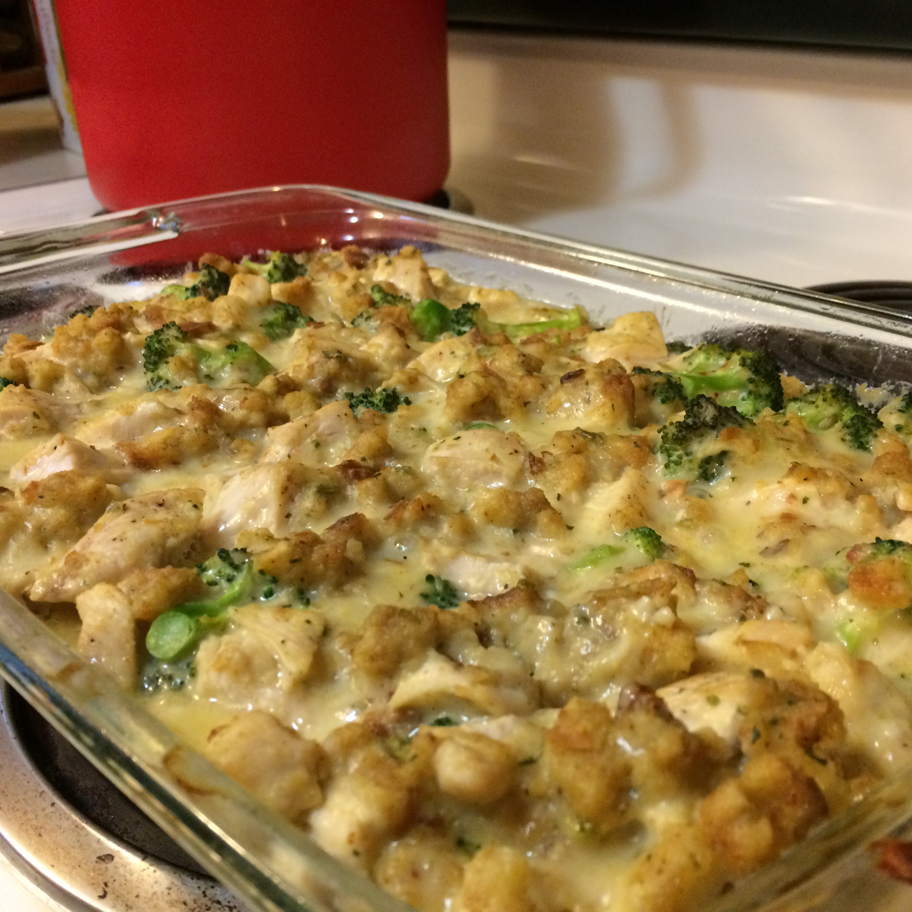

Broccoli Chicken Casserole

Description
This broccoli, chicken, and stuffing bake is so easy to throw together in a 9x13-inch pan and produces a flavorful, well-balanced casserole. "I made this tonight and was pleased with it. Even my SUPER picky 5-year-old cleaned his plate!!! And my husband who usually HATES casseroles liked it as well," says reviewer SLPARISH2.
Ingredients
- 4 skinless, bonesles chicken
- 1 pound broccoli florets, cooked
- 1 can condensed crean of mushroom soup
- 1 tablespoon mayo
- 1 cup shredded Cheddar cheese
Steps
- Preheat oven to 350 degress F
- Boil chicken until tender and shred or cut into bite size pieces
- Steam broccoli until crisp but tender
- Mix together the soup and mayo
- In a baking dish layer the chicken, broccoli, soup mixture and cheese.
- Bake in the preheated oven for 25-30 minutes